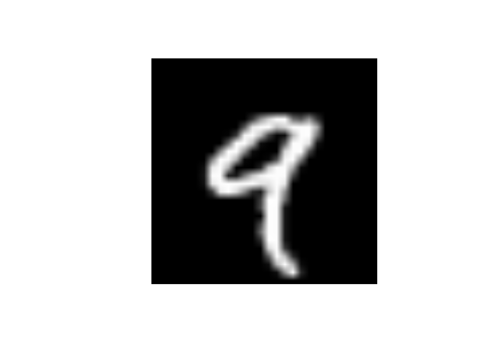
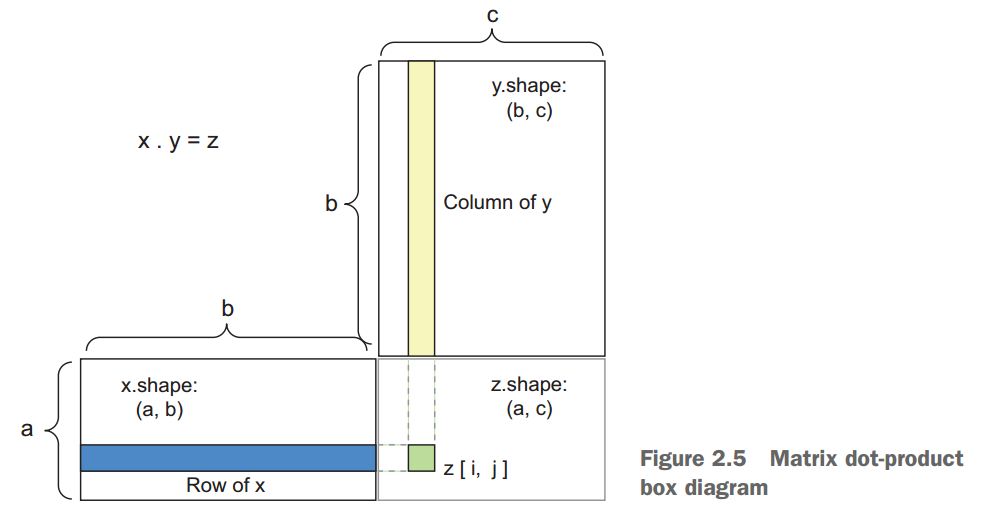

2. Kiến thức cơ bản toán học cho deep learning¶
2.1. Tensor¶
Tensor là cấu trúc dữ liệu cơ bản được dùng trong deep-learning, là cấu trúc dữ liệu khái quát hóa của mảng và vector. Mỗi trục (axis) của tensor có thể có nhiều chiều (dimension)
2.1.1. 0D tensor: Scalar tensor¶
Tensor chỉ có 1 giá trị
2.1.2. 1D tensor: Cấu trúc dạng vector¶
library(dplyr)
library(keras)
x <- c(1:5)
dim(as.array(x))
## [1] 5
Vector x được gọi là vector 5 chiều (khác so với tensor 5 trục - 5D tensor)
2.1.3. 2D tensor: Ma trận 2 trục¶
x <- matrix(rep(0, 3*5), nrow = 3, ncol = 5)
x
## [,1] [,2] [,3] [,4] [,5]
## [1,] 0 0 0 0 0
## [2,] 0 0 0 0 0
## [3,] 0 0 0 0 0
2D tensor bao gồm dòng và cột
2.1.4. 3D tensor¶
x <- array(rep(0, 2*3*2), dim = c(2,3,2))
str(x)
## num [1:2, 1:3, 1:2] 0 0 0 0 0 0 0 0 0 0 ...
3D-tensor có thể sử dụng để lưu trữ thông tin về ảnh (RGB). Khi xử lý âm thanh, có thể có tensor 4D, với video là 5D
2.1.5. Các đặc trưng của tensor¶
Rannk: Số trục (number of axis)Shape: Cho biết định dạng của 1 tensor. Ví dục(2,3,2)Data type: Dữ liệu được lưu trữ trong tensor, thường là double hoặc integer.
Diễn giải với dataset MNIST
load("data/mnist.rda")
train_images <- mnist$train$x
train_labels <- mnist$train$y
test_images <- mnist$test$x
test_labels <- mnist$test$y
#Số trục
train_images %>% dim %>% length
## [1] 3
#Shape
train_images %>% dim
## [1] 60000 28 28
#Type
typeof(train_images)
## [1] "integer"
train_images[5,,] %>% head
## [,1] [,2] [,3] [,4] [,5] [,6] [,7] [,8] [,9] [,10] [,11] [,12] [,13]
## [1,] 0 0 0 0 0 0 0 0 0 0 0 0 0
## [2,] 0 0 0 0 0 0 0 0 0 0 0 0 0
## [3,] 0 0 0 0 0 0 0 0 0 0 0 0 0
## [4,] 0 0 0 0 0 0 0 0 0 0 0 0 0
## [5,] 0 0 0 0 0 0 0 0 0 0 0 0 0
## [6,] 0 0 0 0 0 0 0 0 0 0 0 0 0
## [,14] [,15] [,16] [,17] [,18] [,19] [,20] [,21] [,22] [,23] [,24]
## [1,] 0 0 0 0 0 0 0 0 0 0 0
## [2,] 0 0 0 0 0 0 0 0 0 0 0
## [3,] 0 0 0 0 0 0 0 0 0 0 0
## [4,] 0 0 0 0 0 0 0 0 0 0 0
## [5,] 0 0 0 0 0 0 0 0 0 0 0
## [6,] 0 0 0 0 0 0 0 0 0 0 0
## [,25] [,26] [,27] [,28]
## [1,] 0 0 0 0
## [2,] 0 0 0 0
## [3,] 0 0 0 0
## [4,] 0 0 0 0
## [5,] 0 0 0 0
## [6,] 0 0 0 0
train_images[5,,] %>% as.raster(max = 255) %>% plot

Lưu ý: Trục đầu tiên của tensor thường dùng để lưu các quan sát. Khi xây dựng mô hình với deep learning, dữ liệu thường được chia làm nhiều sample nhỏ chứa 1 lượng quan sát nhất định được gọi là batch. Số lượng quan sát có trong 1 batch được gọi là batch size
#Batch có batch size là 128
batch <- train_images[1:128,,]
batch_2 <- train_images[129:256,,]
Các ví dụ của tensor trong thực tế
- Vector - 2D tensor (samples, feature)
- Time series - 3D tensor (samples, timesteps, features).
Ví dụ: Dữ liệu của giá cổ phiếu Apple được lưu trữ mỗi phút có 3
thông tin: giá hiện tại, giá cao nhất và thấp nhất của phút trước đấy.
Mỗi phút dữ liệu được lưu trữ thành 1 vector có 3 giá trị (1D tensor, 3
dimension), ví dụ c(23,12,34). Như vậy. Mỗi ngày có 390 phút giao
dịch. Do đó, mỗi ngày, giá cổ phiếu được lưu thành tensor (390, 3).
Một năm có 290 ngày giao dịch sẽ được lưu thành tensor 3D dạng
(290,390,3)
[Images/nn-09.png]
- Images - 4D tensor (samples, height, width, channels)
[Images/nn-10.png]
- Video - 5D tensor (samples, frames, height, width, channels)
2.2. Các phép toán với tensor¶
- \(relu(x) = max(x, 0)\)
- \(dot(W, input) = \sum_{i=1..n}W_i*input_i\)
Trong tensor, có nhóm toán tử được gọi là element-wise, nghĩa là các
phép toán không phụ thuộc vào nhau. Các toán tử này có thể được tính
toán rất nhanh khi thực hiện parrallel computing.
Có hai toán tử chính là relu và phép cộng.
- Phép cộng: Cộng hai phần tử vào nhau
relu: max(x, 0)
naive_relu <- function(x) {
for (i in nrow(x))
for (j in ncol(x))
x[i, j] <- max(x[i, j], 0)
x
}
naive_add <- function(x, y) {
for (i in nrow(x))
for (j in ncol(x))
x[i, j] = x[i, j] + y[i, j]
x
}
#Ví dụ phép cộng
x <- array(round(runif(10, 0, 9)),
dim = c(5, 2))
y <- array(5, dim = c(5, 2))
x
## [,1] [,2]
## [1,] 3 0
## [2,] 3 3
## [3,] 7 2
## [4,] 8 0
## [5,] 1 1
y
## [,1] [,2]
## [1,] 5 5
## [2,] 5 5
## [3,] 5 5
## [4,] 5 5
## [5,] 5 5
x + y
## [,1] [,2]
## [1,] 8 5
## [2,] 8 8
## [3,] 12 7
## [4,] 13 5
## [5,] 6 6
pmax(x, 0) #relu
## [,1] [,2]
## [1,] 3 0
## [2,] 3 3
## [3,] 7 2
## [4,] 8 0
## [5,] 1 1
2.2.1. Toán tử sử dụng các dimension khác nhau¶
Đối với các tensor có dim khác nhau, ta có thể dùng hàm sweep, cho phép lựa chọn dimension và toán tử
x <- array(round(runif(1000, 0, 9)),
dim = c(64, 3, 32, 10))
dim(x)
## [1] 64 3 32 10
y <- array(5, dim = c(32, 10))
dim(y)
## [1] 32 10
z <- sweep(x, c(3, 4), y, pmax) # Thực hiện pmax trên 1 phần x
dim(z)
## [1] 64 3 32 10
2.2.2. Tensor dot¶
Phép nhân vector phổ thông, không nên nhầm với phép cộng vector thông thường của element wise

x <- array(runif(10, 0, 9), dim = c(5, 2))
y <- array(runif(10, 0, 9), dim = c(2, 5))
x
## [,1] [,2]
## [1,] 2.939102 0.3199558
## [2,] 5.030776 5.4665251
## [3,] 1.647075 6.3037713
## [4,] 8.546601 5.1596797
## [5,] 1.978528 4.9896420
y
## [,1] [,2] [,3] [,4] [,5]
## [1,] 7.188069 2.805034 7.645972 5.866778 7.777029
## [2,] 5.167509 6.861905 3.229626 2.587324 8.175112
y %*% x
## [,1] [,2]
## [1,] 113.35953 134.9074
## [2,] 93.31549 113.6636
2.2.2.1. Tensor reshaping¶
Tensor reshaping là các sắp xếp lại các hàng và cột để về định dạng mong muốn.
x <- matrix(c(0, 1,2, 3,4, 5),
nrow = 3, ncol = 2, byrow = TRUE)
x
## [,1] [,2]
## [1,] 0 1
## [2,] 2 3
## [3,] 4 5
#Sau khi reshaping
array_reshape(x, dim = c(6, 1))
## [,1]
## [1,] 0
## [2,] 1
## [3,] 2
## [4,] 3
## [5,] 4
## [6,] 5
array_reshape(x, dim = c(2, 3))
## [,1] [,2] [,3]
## [1,] 0 1 2
## [2,] 3 4 5